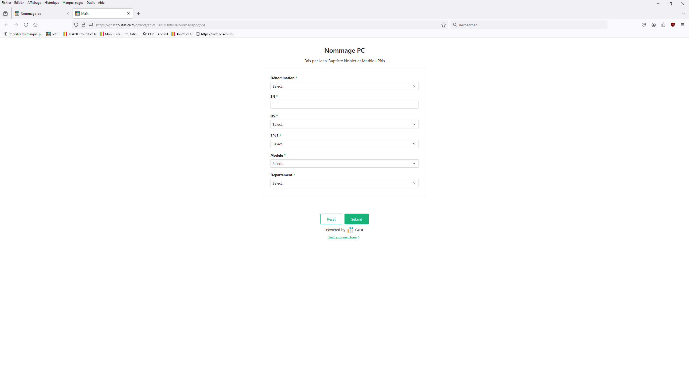
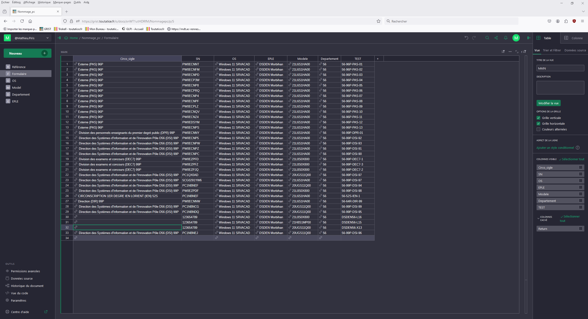
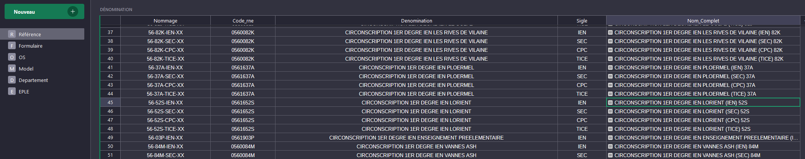
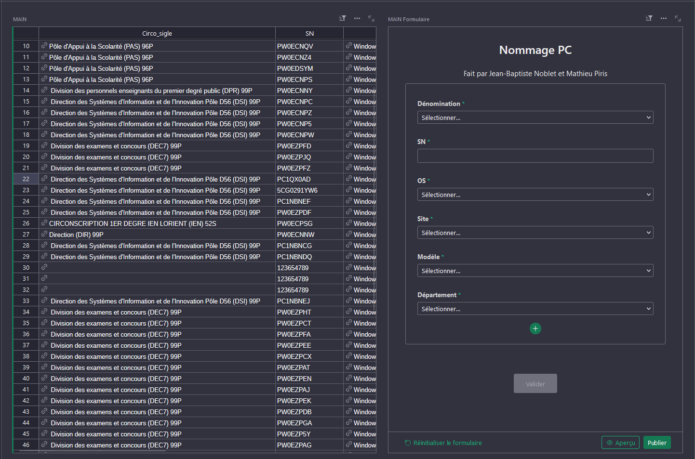

Nommage des postes
Outil de génération automatique de noms de postes informatiques via Grist + Python, pour remplacer la saisie manuelle sujette aux erreurs dans les établissements du Morbihan.
Contexte & problème
Les techniciens de la DSDEN nommaient manuellement chaque nouveau poste informatique lors de son intégration au réseau. Cette opération était source d'erreurs (fautes de frappe, doublons, incohérences avec l'inventaire). Le service avait besoin d'un outil automatisé respectant les conventions de nommage de l'Éducation Nationale.
Projet réalisé en binôme avec un autre stagiaire, sous la direction du Responsable Adjoint DSI. Priorité haute — service qui n'existait pas auparavant.
Ce que j'ai réalisé
- Apprentissage de Grist — outil de base de données collaboratif hébergé sur Toutatice (EN)
- Conception des tables de référence : OS, modèles matériels, circonscriptions, EPLE, département
- Développement du formulaire de saisie Grist accessible aux techniciens
- Formule Python dans Grist (
generer_code_resu()) pour générer automatiquement un nom unique - Logique d'incrémentation : le nom généré intègre le département, l'identifiant de circonscription et un numéro séquentiel auto-incrémenté sans doublon
- Export CSV compatible MDT Web pour le déploiement Windows
- Tests sur poste dédié, sessions de test par types d'utilisateurs
- Documentation technique et guide utilisateur
La formule Python (Grist)
Le cœur du projet est une formule Python écrite directement dans Grist. Elle construit le nom du poste en :
- Récupérant le numéro de département (56) et le nom de la circonscription
- Extrayant les 3 derniers caractères du nom de circonscription et l'identifiant entre parenthèses
- Parcourant toutes les entrées existantes pour collecter les numéros déjà utilisés dans le même groupe (même département + même circonscription)
- Attribuant le plus petit numéro disponible (1–99, formaté en 2 chiffres)
- Retournant le nom final :
56-XXX-IDEN-01
Aperçus du projet

Formulaire de saisie pour les techniciens

Vue principale — table des postes nommés

Formule Python de génération automatique des noms

Vue combinée table + formulaire